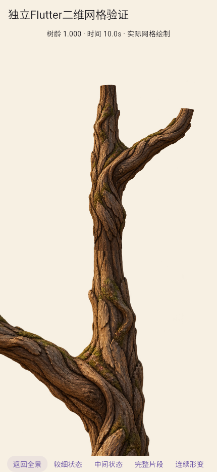
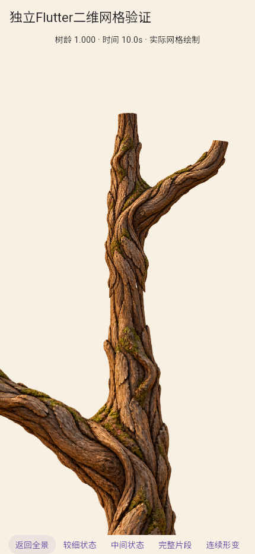
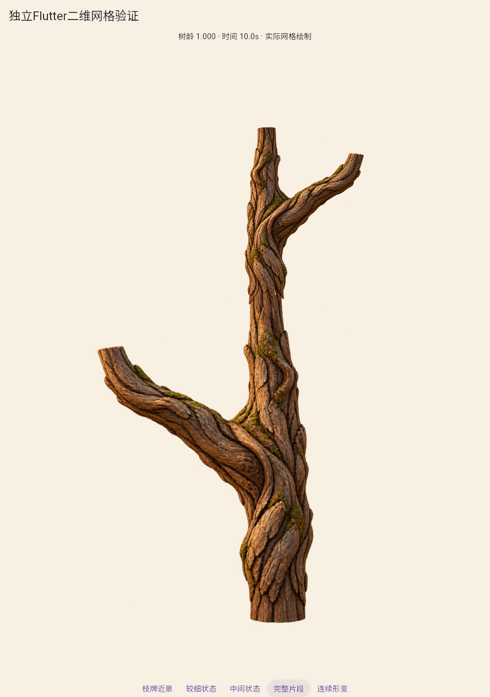
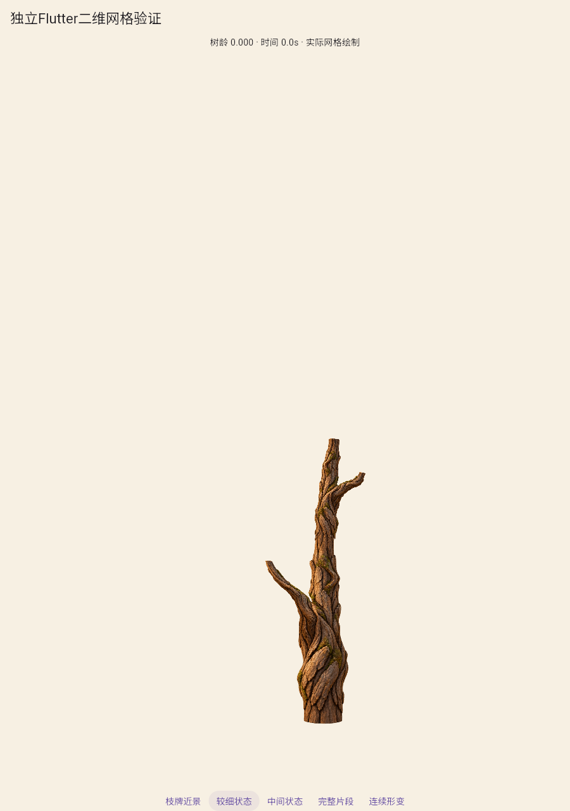
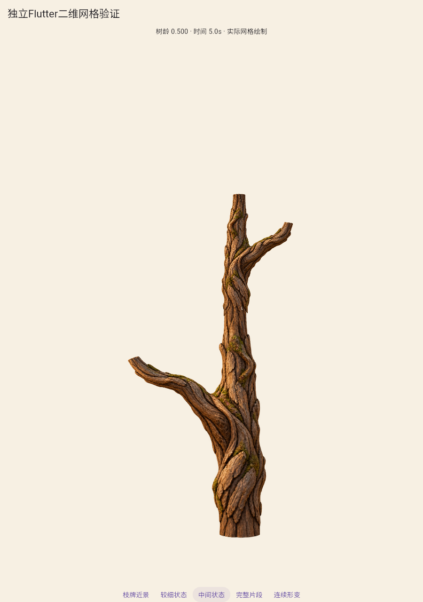
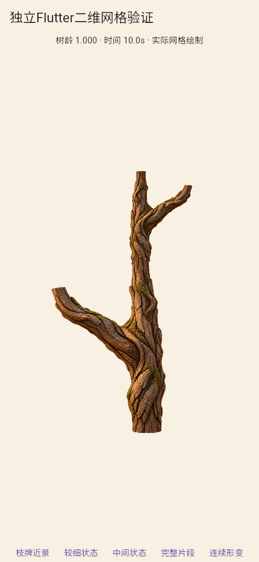

局部插画双构件：共享骨骼对接与搭接边
共点定位成立，搭接版减轻横向断线，仍有材质差异；不是完整树苗/整树，A2未通过。

原图：接点未裂开，横向材质断带明显。

搭接版：不规则树皮舌片，仍有色差和材质尺度变化。

父段与子段共用节点2，右格未镜像。

初始局部姿态，仍有老树皮与截口，不是完整幼苗。

同一图像与UV，实际网格连续插值。

手机视口不等于实体手机测试。
原图对接连续片段
搭接版连续片段
各101个实际Flutter状态，约10.1秒；0/0.25/0.5/0.75/1有接头顶点对照。编码10fps不是运行帧率。
原方案结果 · 搭接版结果 · 旧单构件回归 · 范围、结论与下一项